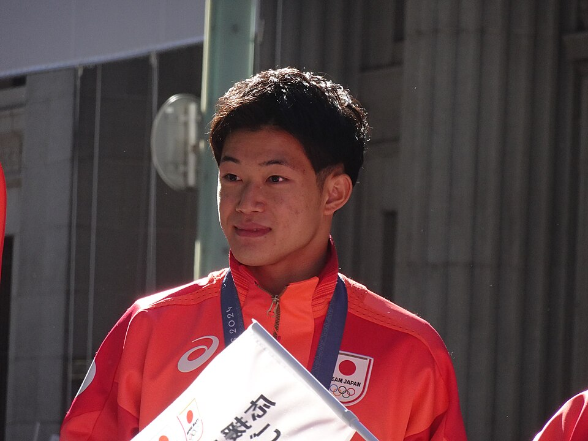

水泳
•
飛込 / 男子10m高飛込
たまい りくと
玉井 陸斗
Rikuto Tamai
🏢 所属: JSS宝塚
🏅 パリ五輪銀メダル（日本飛込史上初）🏅 ブダペスト世界水泳銀メダル🏅 最年少日本選手権王者
10メートルの高みから静寂を裂いて描く放物線。飛込界の歴史を塗り替えた日本の若き至宝
経歴・これまでの歩み
小学1年生で飛び込みを始め、名門JSS宝塚で馬淵崇英コーチの指導を受ける。中学1年時の2019年日本選手権を史上最年少の12歳で制覇。2022年世界水泳ブダペスト大会で銀メダルを獲得し、2024年パリ五輪では圧巻の演技で日本勢92年ぶりの悲願となる銀メダルを獲得した。
主要大会ハイライト戦績
2024年
パリオリンピック
男子高飛込 銀メダル（日本史上初）
2022年
ブダペスト世界水泳
男子高飛込 銀メダル
2021年
東京オリンピック
男子高飛込 7位入賞（14歳での快挙）
プレイスタイル＆世界を制する武器
高さ10メートルの飛込台からの入水時に水しぶきをほとんど立てない「ノースプラッシュ（Rip Entry）」。回転とひねりの軸が全くブレない空中姿勢と、寸分の狂いもない入水角度が世界最高峰の評価を受けます。
専門家・メディアによる客観的分析・批評
✨
強み・世界トップ水準の評価
10m高飛込の着水時に水しぶきを全く立てない『ノースプラッシュ』の技術精度は、世界最強を誇る中国の国家代表選手陣からも一目置かれる存在。
出典・ソース:
馬淵崇英コーチ / パリ五輪国際中継解説
⚠️
課題・懸念される客観的事実
高難度技（前宙返り4回転半抱え型など）の入水角度がわずかに狂った際の減点が大きく、6本の演技を完全に揃える安定感にまだ成長途上のムラがあります。
出典・ソース:
産経新聞スポーツ欄 / NHK五輪取材班
愛知・名古屋2026への決意とメッセージ
大会スケジュール＆観戦のツボ
🗓️ 出場予定日程・会場
2026年9月28日 男子10m高飛込決勝
👀 観戦の注目ポイント
落下速度時速50kmを超える空中での4回転半の超絶技巧と、水面に吸い込まれる瞬間の美しいノースプラッシュ。